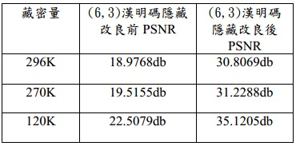
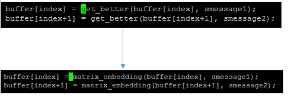
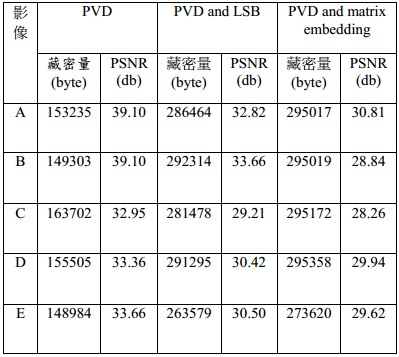
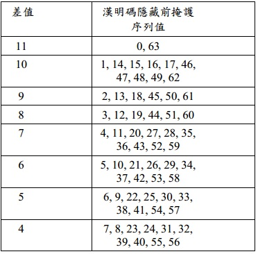

|
|
|
|
|  |
這張表是在500-1裡面分別隱藏了200.bmp(120K) 300.bmp(270K) 350.bmp(296K)三張圖，以下所執行的是PVD Modify Matrix Embedding steganographic ./steganography.exe -xf test/500-1.bmp test/300.bmp test/testout-2.bmp pm ./steganography.exe -xf test/500-1.bmp test/350.bmp test/testout-3.bmp pm  隱藏完後利用psnr.cpp來計算PSNR值，compile: |
|  |
此表為在500-1 ~500-5檔案裡進行了3種隱藏法的比較圖，隱藏的是350.bmp，機密影像無法完全藏入，會回傳剩餘多少bit還沒隱藏。
在這邊以500-1.bmp 隱藏350.bmp為例子： PVD LSB : ./steganography.exe -xf test/500-1.bmp test/350.bmp test/testout-2.bmp pl PVD MME : ./steganography.exe -xf test/500-1.bmp test/350.bmp test/testout-3.bmp pm (請注意這邊datahiding.cpp中283行與284行應使用get_better函式) 回傳的數字可以計算出藏了多少byte，PSNR值請執行psnr.exe: ./psnr.exe test/500-1.bmp test/testout-2.bmp ./psnr.exe test/500-1.bmp test/testout-3.bmp |
|  |
此表為MME的掩護序列值之worst case，可以執行testworst得到：
compile : g++ testworst.cpp -o testworst.exe 執行 : ./testworst.exe
執行結果代表意義為 (掩護序列值:MME隱藏前後差值最大值)
|